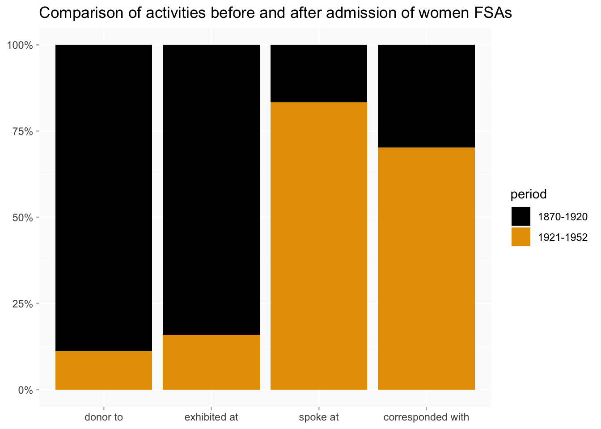
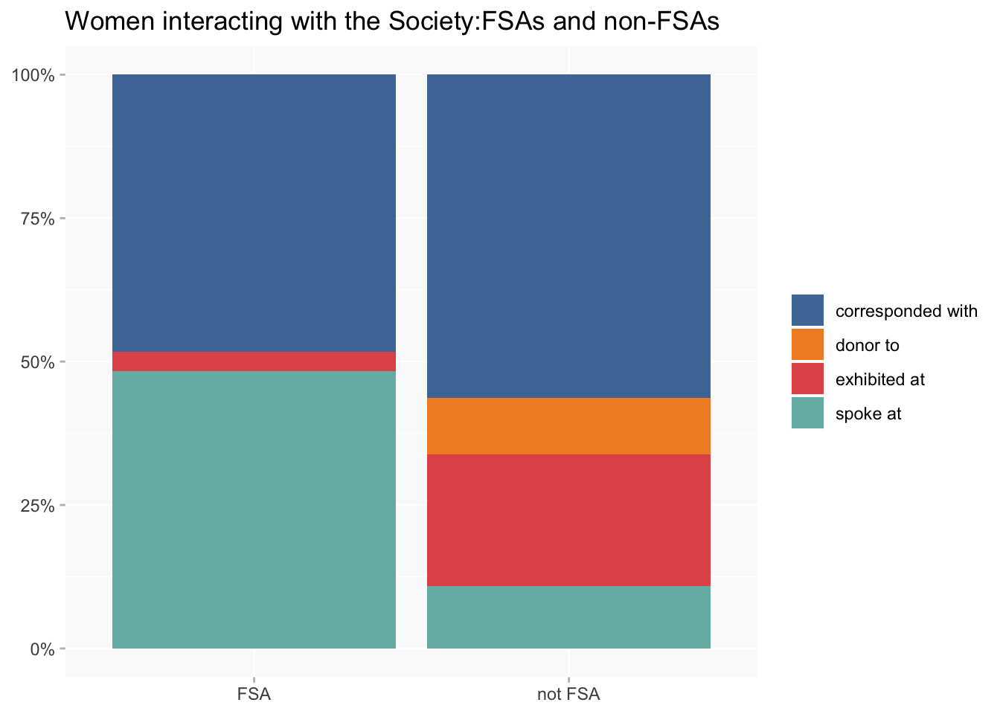

Women at the Society of Antiquaries of London
SAL
ppa
Initial exploration of the main forms of women’s engagement with SAL
Wikibase queries
Types of interaction
- corresponded with (P73) (all but one in Q8)
- spoke at (P23) (Q1)
- exhibited at (P13) (Q1)
- donor to (P111) (Q8)
Dropping a few others with only one or two instances (applicant to, employer, has works in the collection, loaner to).
A count of one here represents one dated event in the wikibase, completely ignoring any differences in the nature/significance of the activity. (Or any links between activities: eg, in a few cases an FSA spoke at and exhibited at the same meeting on what looks like the same topic; this probably accounts for most or all of FSAs’ post-1920 exhibited at instances. But they are all counted separately here.)
Interactions over time
Do the changes here reflect shifts specifically in women’s engagement with the Society, broader changes in the activities of the Society itself… or gaps in sources/data entry?
Split into two periods, before and after admission of women as FSAs.

Activity by FSAs and non-FSAs
In this chart “FSA” includes any interactions before a woman was elected.
This time women are only counted as FSA for interactions after election. (I wanted to see how much different it would make.)

(I don’t think this one quite works.)
- Ordered by date of earliest interaction with the Society.
- I’ve removed names because for non-FSAs there were too many to be readable.
Timelines
To keep numbers manageable, this is limited to women who were FSAs (and had at least one other interaction) and non-FSAs who had at least two interactions with the Society. (As with other tall charts, may be easier to see if you right-click on the image and open in a new tab.)